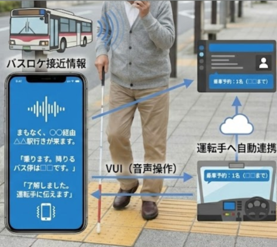

1. 正確なバス乗降支援
アプリとセンサーが連携し、バスの正確な停車位置へ誘導。乗るべきバスが来たこと、そして降りるべきバス停を音声で確実に伝えます。
視覚障がい者の約4割が、移動への不安から外出を控えています。特にバスの利用は「乗り間違い」「降りる場所がわからない」といった恐怖がつきまといます。この「閉じこもり」は、要介護リスクを高めるだけでなく、社会参加の機会を奪っています。

アプリとセンサーが連携し、バスの正確な停車位置へ誘導。乗るべきバスが来たこと、そして降りるべきバス停を音声で確実に伝えます。
興味・関心に合わせたスポットをレコメンド。単なる移動手段だけでなく、「出かけたい」という意欲を創出します。
「誰もが取り残されない社会を創りたい。
"取り残される"という経験を、誰もがしない社会へ。
Access Bridgeは、テクノロジーと社会の架け橋となり、
全ての人が自由に移動できる未来を実現します。」
この強い想いを胸に、私たちは持続可能な事業として
社会課題の解決に挑み続けます。

インフラからアプリまで、フルスタックで開発できるITエンジニア。
新規事業推進と生成AI活用の経験を活かし、技術とビジネスの両面から課題解決を実現します。